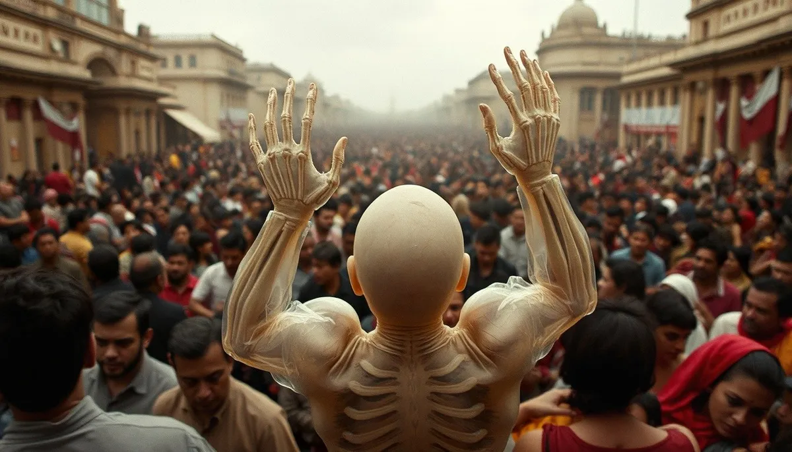

OKpolítico
OKpolíticoTlatelolco 1968: El expediente del 2 de octubre

Un análisis documental sobre los hechos ocurridos el 2 de octubre de 1968 en la Plaza de las Tres Culturas de Tlatelolco. Examinamos el contexto del movimiento estudiantil, la narrativa inicial sostenida por la administración de Gustavo Díaz Ordaz y las contradicciones evidenciadas tras la apertura
Compartir por WhatsApp▶ Ver este video en YouTube y suscríbete
18:10 horas: La señal de bengala en la Plaza de las Tres Culturas
El 2 de octubre de 1968, a diez días de inaugurarse los Juegos Olímpicos en la Ciudad de México, miles de personas se congregaron en la Plaza de las Tres Culturas. Cerca de las 18 horas con diez minutos, bengalas arrojadas desde un helicóptero desataron una balacera que culminó en un número indeterminado de muertes.
Aproximadamente a las 17 horas con 15 minutos, la plaza albergaba a cerca de 10,000 asistentes, incluyendo estudiantes, profesores, familias y corresponsales extranjeros, según estimaciones de la UNAM. Desde el tercer piso del edificio Chihuahua, los dirigentes del Consejo Nacional de Huelga anunciaron la cancelación de la marcha rumbo al Casco de Santo Tomás para evitar enfrentamientos.
✉️ Recibe lo importante del día en tu correo. Suscríbete gratis →Minutos después, un cerco militar y hombres vestidos de civil con un guante o pañuelo blanco en la mano izquierda coparon los accesos. La balacera se prolongó durante la tarde y continuó con cateos nocturnos departamento por departamento.
Testigos como el sobreviviente Javier Zúñiga afirmaron ante Amnistía Internacional que las tropas avanzaron antes del tiroteo masivo, contradiciendo la versión de un ataque inicial perpetrado por manifestantes.
El verano de 1968: De la gresca estudiantil a la militarización
El conflicto inició el 22 de julio de 1968 con una pelea entre estudiantes de las vocacionales 2 y 5 del IPN y de la preparatoria Isaac Ochoterena, en la plaza de La Ciudadela.
Al día siguiente, la policía antimotines, conocida como el Cuerpo de Granaderos, disolvió el enfrentamiento persiguiendo a alumnos e ingresando a las escuelas. El 26 de julio confluyeron dos marchas: una organizada por el IPN contra la violencia policial y otra conmemorativa de la revolución cubana, convocada por organizaciones de izquierda.
La intervención policial derivó en choques callejeros, quema de autobuses y decenas de arrestos. En la madrugada del 30 de julio,
el Ejército utilizó una bazuca para derribar la puerta labrada del siglo 18 de la Preparatoria 1 en San Ildefonso, ocupando además los planteles 2, 3 y 5 de la UNAM y la Vocacional 5 del Politécnico.
El primero de agosto, el rector de la UNAM, Javier Barros Sierra, encabezó una marcha de luto y posteriormente presentó su renuncia en protesta por la violación a la autonomía universitaria. El 4 de agosto se constituyó el Consejo Nacional de Huelga, que emitió un pliego petitorio de seis demandas centrales: libertad a presos políticos,
destitución de jefes policiacos, desaparición del cuerpo de granaderos, indemnización a víctimas de la represión, derogación del delito de disolución social de los artículos 145 y 145 bis del Código Penal, y deslinde de responsabilidades.
El 13 de septiembre se llevó a cabo la Marcha del Silencio, en la que participaron más de 250,000 personas en absoluto orden para refutar acusaciones de provocación violenta. No obstante, el 18 de septiembre tropas militares ocuparon Ciudad Universitaria arrestando a unas 1,500 personas,
y el 23 de septiembre tomaron por asalto el Casco de Santo Tomás tras horas de tiroteos.
La versión oficial de 1968: El relato de la emboscada a los soldados
La narrativa construida de inmediato por el gobierno del presidente Gustavo Díaz Ordaz y reproducida por la prensa de la época afirmó que las fuerzas militares asistieron a la plaza únicamente a preservar el orden y fueron emboscadas por tiradores armados colocados en las azoteas de los multifamiliares. El gobierno reportó inicialmente un saldo oficial de entre veinte y treinta personas fallecidas y 36 heridos.
El parte militar de la Secretaría de la Defensa Nacional insistió en que sus unidades respondieron al fuego para proteger a la ciudadanía y a los propios elementos castrenses heridos. El titular de la Dirección Federal de Seguridad, Fernando Gutiérrez Barrios, notificó en sus informes el arresto de 1345 personas,
muchas de las cuales fueron catalogadas bajo los conceptos de agitadores extremistas de izquierda o elementos desestabilizadores al servicio de potencias extranjeras. En sus memorias reproducidas por el historiador Enrique Krauze,
Gustavo Díaz Ordaz sostuvo hasta el final de sus días que su determinación impidió la consumación de una conjura orquestada que amenazaba la estabilidad institucional de la República y la celebración de las Olimpiadas.
Las contradicciones del expediente: Batallón Olimpia y reportes desclasificados
Pese a que el gobierno negó durante décadas el despliegue de cuerpos clandestinos, la desclasificación de archivos de la Sedena y la DFS confirmó la existencia del Batallón Olimpia,
grupo paramilitar creado para resguardar las instalaciones olímpicas y encabezado en Tlatelolco por mandos militares. Documentos del Archivo General de la Nación y peritajes analizados por la Fiscalía Especial revelaron que miembros del Estado Mayor Presidencial y del Batallón Olimpia ocuparon departamentos y azoteas de edificios como el Chihuahua y el Molino del Rey,
apostando francotiradores bajo la directriz del general Luis Gutiérrez Oropeza. En 2001,
expedientes y fotografías inéditas entregadas al diario La Jornada demostraron que decenas de jóvenes detenidos fueron trasladados en secreto a celdas del Campo Militar Número Uno, desmintiendo tres décadas de negativas oficiales sobre la existencia de presos políticos en instalaciones castrenses.
Asimismo, investigaciones de la Comisión Nacional de los Derechos Humanos y testimonios recabados por el Archivo Histórico de la UNAM concluyeron que el fuego inicial provino de los francotiradores del Estado hacia las filas del propio Ejército Mexicano y hacia la multitud,
propiciando un fuego cruzado que dejó atrapados a miles de civiles.
La pugna por las cifras: ¿Cuántas víctimas hubo en Tlatelolco?
A más de medio siglo de los hechos, no existe consenso sobre la cantidad exacta de muertos. Las cifras fluctúan dramáticamente según la fuente consultada, debido a la censura imperante, la alteración de registros médicos y el confinamiento de expedientes hospitalarios.
Por un lado, la investigadora Susana Zavala identificó plenamente a 44 fallecidos el 2 de octubre en Tlatelolco, sumando 78 muertes en todo el periodo del movimiento estudiantil. Kate Doyle, del Archivo de Seguridad Nacional de Estados Unidos, respaldó la lista de 44 nombres comprobados documentalmente a través de actas ministeriales y defunciones hospitalarias.
En contraste, organizaciones defensoras de derechos humanos, sobrevivientes del Comité 68 y la periodista Oriana Fallaci, herida de bala en la plaza, reportaron de 300 a más de 500 muertos. La escritora Elena Poniatowska y el poeta Octavio Paz difundieron la cifra de 325 víctimas atribuida originalmente al diario británico The Guardian.
Por su parte, telegramas desclasificados de la Embajada de Estados Unidos estimaron el saldo entre 150 y 200 decesos, mientras que el informe final de la fiscalía especial mexicana FEMOSPP fijó un cálculo estimativo de 350 víctimas directas entre muertos y desaparecidos.
Guerra Fría e infiltración: Hipótesis sobre la autoría y el móvil
La primera hipótesis, defendida por Díaz Ordaz y su secretario de Gobernación Luis Echeverría Álvarez, afirmaba que el movimiento estudiantil estaba infiltrado por agentes cubanos y soviéticos dedicados a boicotear los Juegos Olímpicos y derrocar al régimen constitucional.
Documentos estadounidenses desclasificados revelaron que tanto Díaz Ordaz como Echeverría formaban parte de la red de informantes LITEMPO de la CIA, coordinada por el jefe de estación Winston Scott. Pese a la paranoia oficial anticomunista, analistas señalan que la CIA monitoreó cada asamblea sin hallar pruebas materiales de un complot armado financiado desde Moscú.
La segunda hipótesis, planteada por el CNH y colectivos civiles, sostiene que se trató de un operativo punitivo premeditado, diseñado desde el gabinete presidencial para aniquilar la estructura civil del movimiento y garantizar el orden internacional frente a la prensa mundial.
Una tercera hipótesis documentada en análisis militares sugiere una grave descoordinación y choque de facciones entre el Estado Mayor Presidencial y el Ejército regular, donde la emboscada simulada con francotiradores engañó a las tropas en tierra para provocar una respuesta de fuego indiscriminado.
El desenlace legal: Juicios, exoneraciones y el reconocimiento de Estado
En el plano judicial, la creación en 2001 de la Fiscalía Especial para Movimientos Sociales y Políticos del Pasado abrió una averiguación formal contra Luis Echeverría por el delito de genocidio. En 2006 se le dictó prisión domiciliaria, pero en 2009 un tribunal colegiado lo exoneró por falta de elementos directos que acreditaran su responsabilidad jurídica individual.
Echeverría falleció en 2022 en calidad de exonerado penalmente, lo que provocó reiteradas críticas del Comité 68 y organizaciones humanitarias, quienes han denunciado más de medio siglo de impunidad judicial para los mandos civiles y castrenses involucrados.
En 2024, el gobierno de la presidenta Claudia Sheinbaum emitió un acuerdo publicado en el Diario Oficial donde el Estado mexicano reconoció por primera vez que los hechos del 2 de octubre de 1968 constituyeron un crimen de lesa humanidad,
ofreciendo una disculpa pública a las víctimas y sus familias. No obstante,
la Comisión Interamericana de Derechos Humanos y colectivos independientes han señalado que las disculpas políticas no suplen la apertura integral de los archivos militares ni el deslinde de responsabilidades penales pendientes.
Las preguntas abiertas del expediente 68
A más de cinco décadas, el expediente de Tlatelolco conserva incógnitas fundamentales sin resolución concluyente. Se desconoce la identidad y el destino final de decenas de manifestantes reportados desaparecidos tras ser ingresados en instalaciones policiales y militares.
Permanece sin dilucidar el número exacto de personas que perdieron la vida, ante las discrepancias documentadas entre los 44 decesos plenamente certificados por el Archivo de Seguridad Nacional y las más de 300 víctimas mortales registradas por testimonios,
fiscalías y organismos internacionales. Tampoco existe una sentencia definitiva que señale a los ejecutores de las órdenes de tiro,
mientras miles de fojas resguardadas en la Secretaría de la Defensa Nacional continúan bajo disputa de acceso público por parte de comisiones de la verdad y familiares. Con las versiones oficiales colapsadas frente a la evidencia documental y las responsabilidades penales extinguidas sin culpables sentenciados,
el juicio sobre lo acontecido en la Plaza de las Tres Culturas corresponde a la deliberación de la sociedad.
Sigue viendo
Con información de
Comisión Nacional de los Derechos Humanos (CNDH) · BBC Mundo · BBC Mundo (LITEMPO) · Archivo de la Fiscalía Especial para Movimientos Sociales y Políticos del Pasado (FEMOSPP) · Amnistía Internacional · France 24 · Comisión Interamericana de Derechos Humanos (OEA) · Archivo Histórico UNAM / Colección M68 · National Security Archive